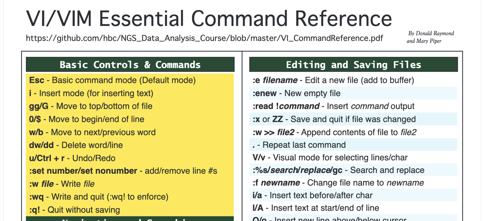

Approximate time: 30 min
Learning Objectives
- View the contents of a file
- Create a new file using the Vim text editor
- Execute basic shortcuts in the Vim text editor
Are you logged into Biowulf, on a compute node, and in your course directory?
If not, first do that before proceeding! As a reminder, the course directory is: cd /data/Bspc-training/$USER
Examining Files
We now know how to move around the file system and look at the contents of directories, but how do we look at the contents of files? On your laptop, viewing a file is as simple as finding it in the file explorer window and double clicking to open it. As you will have noticed so far, the point and click of the mouse is not very useful when working on the command-line. Instead we will need to equip ourselves with some helpful commands.
cat command
The easiest way to examine a file is to just print out all of its contents using the command cat. We can test this out by printing the contents of /unix_lesson/other/sequences.fa. Enter the command followed by the filename, including the path when necessary:
$ cat unix_lesson/other/sequences.fa
The cat command prints out the all the contents of sequences.fa to the screen.
catstands for catenate; it has many uses and printing the contents of a files onto the terminal is one of them.
What does this file contain?
>SRR014849.1 EIXKN4201CFU84 length=93
GGGGGGGGGGGGGGGGCTTTTTTTGTTTGGAACCGAAAGGGTTTTGAATTTCAAACCCTTTTCGGTTTCCAACCTTCCAAAGCAATGCCAATA
>gi|340780744|ref|NC_015850.1| Acidithiobacillus caldus SM-1 chromosome, complete genome
ATGAGTAGTCATTCAGCGCCGACAGCGTTGCAAGATGGAGCCGCGCTGTGGTCCGCCCTATGCGTCCAACTGGAGCTCGTCACGAG
TCCGCAGCAGTTCAATACCTGGCTGCGGCCCCTGCGTGGCGAATTGCAGGGTCATGAGCTGCGCCTGCTCGCCCCCAATCCCTTCG
TCCGCGACTGGGTGCGTGAACGCATGGCCGAACTCGTCAAGGAACAGCTGCAGCGGATCGCTCCGGGTTTTGAGCTGGTCTTCGCT
CTGGACGAAGAGGCAGCAGCGGCGACATCGGCACCGACCGCGAGCATTGCGCCCGAGCGCAGCAGCGCACCCGGTGGTCACCGCCT
CAACCCAGCCTTCAACTTCCAGTCCTACGTCGAAGGGAAGTCCAATCAGCTCGCCCTGGCGGCAGCCCGCCAGGTTGCCCAGCATC
CAGGCAAATCCTACAACCCACTGTACATTTATGGTGGTGTGGGCCTCGGCAAGACGCACCTCATGCAGGCCGTGGGCAACGATATC
CTGCAGCGGCAACCCGAGGCCAAGGTGCTCTATATCAGCTCCGAAGGCTTCATCATGGATATGGTGCGCTCGCTGCAACACAATAC
CATCAACGACTTCAAACAGCGTTATCGCAAGCTGGACGCCCTGCTCATCGACGACATCCAGTTCTTTGCGGGCAAGGACCGCACCC
>gi|129295|sp|P01013|OVAX_CHICK GENE X PROTEIN (OVALBUMIN-RELATED)
QIKDLLVSSSTDLDTTLVLVNAIYFKGMWKTAFNAEDTREMPFHVTKQESKPVQMMCMNNSFNVATLPAE
less command
cat is a terrific command, but when the file is really big, it can be annoying to use. In practice, when you are running your analyses on the command-line you will most likely be dealing with large files. In our case, we have FASTQ files. Let’s take a look at the list of raw_fastq files and add the -h modifier to see how big the files are.
$ ls -lh unix_lesson/raw_fastq
The
lscommand has a modifier-hwhen paired with-l, will list the files and also print sizes of files in human readable format.
In the fourth column you will see the size of each of these files, and you can see they are quite large, so we probably do not want to use the cat command to look at them. Instead, we can use the less command.
Move into our raw_fastq directory and enter the following command:
$ less Mov10_oe_1.subset.fq
Rather than printing to screen, the less command opens the file in a new buffer allowing you to navigate through it. Does this look familiar? You might remember encountering a similar interface when you used the man command. This is because man is using the less command to open up the documentation files! The keys used to move around the file are identical to the man command. Below we have listed some additional shortcut keys for navigating through your file when using less.
Shortcuts for less
| key | action |
|---|---|
| SPACE | to go forward |
| b | to go backwards |
| g | to go to the beginning |
| G | to go to the end |
| q | to quit |
Use the shortcut keys to move through your FASTQ file, we will explore these files in more detail later in the workshop.
Searching files with less
less also gives you a way of searching through files.
Just type in / to begin a search, you will see that the / will show up at the bottom of the less buffer. Now, enter the name of the string of characters you would like to search for and hit the enter key. The interface will move to show you the location where that string is found, and highlight the string. If you hit / then ENTER, less will just repeat the previous search.
less searches from the current location and works its way forward. For instance, let’s search for the sequence GAGACCC in our file. You can see that we go right to that sequence and can see what it looks like.
If you start a search when you are at the end of the file, less will not find it. You need to go to the beginning of the file and search.
To exit hit q. There are other more sophisticated commands to search through your file (and we will cover these later), but this shortcut search is useful for a quick scan through.
head and tail commands
There’s another way that we can look at files, and just look at part of them. In particular, if we just want to see the beginning or end of the file to see how it’s formatted.
The commands are head and tail and they just let you look at the beginning and end of a file respectively.
$ head Mov10_oe_1.subset.fq
$ tail Mov10_oe_1.subset.fq
By default, the first or last 10 lines will be printed to screen. The -n option can be used with either of these commands to specify the number n lines of a file to display. For example, let’s print the first/last line of the file:
$ head -n 1 Mov10_oe_1.subset.fq
$ tail -n 1 Mov10_oe_1.subset.fq
Exercise
- Change directories into
genomics_data. You can do this using a full or relative path. - Use the
lesscommand to open up the fileEncode-hesc-Nanog.bed. - Search for the string
chr11; you’ll see all instances in the file highlighted. - Staying in the
lessbuffer, use the shortcut to get to the end of the file. Report the three highlighted lines at the end of the file where you seechr11highlighted. - Exit the
lessbuffer and come back to the command prompt. - Print to screen the last 5 lines of the file
Encode-hesc-Nanog.bed. Report what you see as the output within the Terminal.
Writing files
We’ve been able to do a lot of work with files that already exist, but what if we want to write and/or create our own files? Obviously, we’re not going to type in sequence information for a FASTA file, but you’ll see as we go that there are a lot of situations in which we would need to write/create a file or edit an existing file.
In order to create or edit files we will need to use a text editor. When we say, “text editor,” we really do mean “text”: these editors can only work with plain character data, not tables, images, or any other media. The types of text editors available can generally be grouped into two categories: graphical user interface (GUI) text editors and command-line editors.
GUI text editors
A GUI is an interface that has buttons and menus that you can click on to issue commands to the computer and you can move about the interface just by pointing and clicking. You might be familar with GUI text editors, such as BBEdit, Sublime, and Notepad++, which allow you to write and edit plain text documents. These editors often have features to easily search text, extract text, and highlight syntax from multiple programming languages. They are great tools, but since they are ‘point-and-click’, we cannot efficiently use them from the command line.
Command-line editors
When working remotely, we need a text editor that functions from the command line interface. With command-line editors you must navigate the interface using the arrow keys and shortcuts, since you do not have the option to ‘point-and-click’. Some popular editors include Emacs, Vim, or a graphical editor such as Gedit. These are editors which are generally available for use on high-performance compute clusters. There are also simpler editors available for use on the cluster (e.g. nano), but tend to have limited functionality.
Introduction to Vim
To write and edit files, we’re going to use a text editor called ‘Vim’. Vim is a very powerful text editor, and it offers extensive text editing options. However, in this introduction we are going to focus on exploring some of the more basic functions.
How do I keep track of all these shortcuts in Vim?
To help you remember some of the keyboard shortcuts that are introduced below and to allow you to explore additional functionality on your own, the Harvard HPC staff compiled a cheatsheet linked here. Download it to your computer, it is a useful resource to have open while using Vim.

Vim Interface
You can create a document by calling a text editor (in our case vim) and providing the name of the document you wish to create.
Change directories to the unix_lesson/other (try using the .. shortcut!) folder and create a document using called draft.txt using the vim command:
$ vim draft.txt
Note the "draft.txt" [New File] typed at the bottom left-hand section of the screen. This tells you that you just created a new file in vim.
Vim Modes
Vim has two basic modes that will allow you to create documents and edit your text:
-
command mode (default mode): will allow you to save and quit the program (and execute other more advanced commands).
-
insert (or edit) mode: will allow you to write and edit text
Upon creation of a file, vim is automatically in command mode. Let’s change to insert mode by typing i. Note the --INSERT-- at the bottom left hand of the screen. Now type in a few lines of text:

After you have finished typing, press esc to enter command mode.
Note the --INSERT-- has now disappeared from the bottom of the screen.
Review of Vim modes
key action insert mode - to write and edit text command mode - to issue commands / shortcuts
Saving and Quitting
To “write to file” or save the modifications made to the file, type :w when in command mode. You can see the commands you type in the bottom left-hand corner of the screen.

After you have saved the file, the total number of lines and characters in the file will print out at the bottom left-hand section of the screen.

Alternatively, we can write to file (save changes) and quit all at once by typing :wq. Now, you should have exited vim and returned back to your command prompt.
To edit the newly created draft.txt file, you can open it again with vim: vim draft.txt. First, change to insert mode and type a few additional lines (you can move around the lines using the arrows on the keyboard). This time we decide to quit without saving by going into command mode by pressing the key, and then typing :q!.
Review of saving and quitting
key (in command mode) action to write to file (save) to write to file and quit to quit without saving
Shortcuts in Vim
While we cannot point and click to navigate the document, we can use the arrow keys to move around. However, navigating with arrow keys can be very slow, so Vim has shortcuts (which are completely unintuitive, but very useful as you get used to them over time).
Create a new file called spider.txt using vim. Go into insert mode and enter the text as shown below in the screenshot:

Once you have finished typing, you can display line numbers by changing to command mode and then typing the :set number command. Later, if you choose to remove the line numbers you can reset it with :set nonumber.

| key (in command mode) | action |
|---|---|
| to number lines | |
| to remove line numbers |
Save the document. Check to see what mode you are currently in. While in command mode, try moving around the file spider.txt and familiarizing yourself with some of these shortcuts!
Navigating around the file
| key (in command mode) | action |
|---|---|
| to move to top of file | |
| to move to bottom of file | |
| to move to end of line | |
| to move to beginning of line | |
| to move to next word | |
| to move to previous word |
Practice some of the editing shortcuts, then quit the document without saving any changes.
Editing the file
| key (in command mode) | action |
|---|---|
| to delete word | |
| to delete line | |
| to undo | |
| to redo | |
| to search for a pattern (n/N to move to next/previous match) | |
| to search for a pattern and replace for all occurrences |
More VIM resources: The BSPC training page has a number of resources and cheatsheets for solidifying these Vim skills!
Assignment
We have covered some basic commands in vim, but practice is key for getting comfortable with the program. Let’s practice what we just learned in a brief challenge.
- Open
spider.txt, and delete the word “water” from line #2. - Quit without saving.
- Open
spider.txtagain, and replace every occurrence of “spider” with “unicorn”. - Delete: “Down came the rain.”
- Save the file.
- Undo your previous deletion.
- Redo your previous deletion.
- Delete the first and last words from each of the lines.
- Save the file.
-
Let your instructor now when you have done this and they’ll check your work
This lesson has been developed by members of the teaching team at the Harvard Chan Bioinformatics Core (HBC). These are open access materials distributed under the terms of the Creative Commons Attribution license (CC BY 4.0), which permits unrestricted use, distribution, and reproduction in any medium, provided the original author and source are credited.